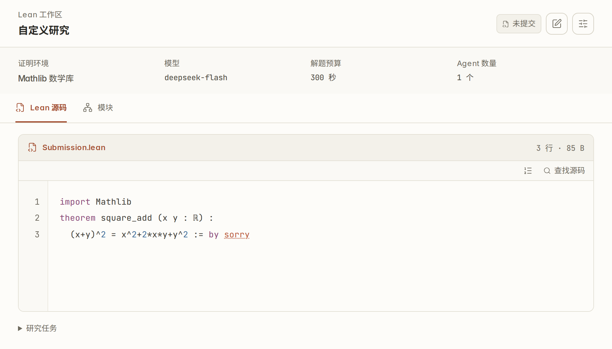
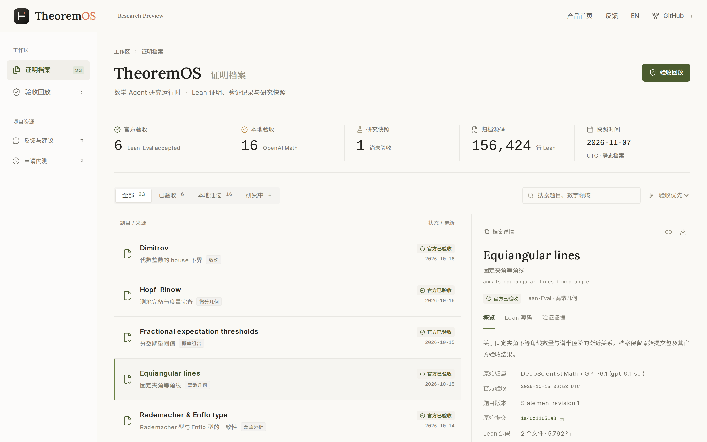

Math agent researchers
Keep the problem, model and budget fixed, then swap the search, context or collaboration strategy to see which works better. Every attempt keeps its candidates, diagnostics and usage.
A research runtime for math agents.
Connect your model. Verify Lean proofs independently.

The research chat and the Lean workspace sit side by side. On phones and tablets you can switch views to see the statement, the source and the check status.
Submit a Lean statement and choose a model and budget. TheoremOS runs the research and the independent check.
Keep the problem, model and budget fixed, then swap the search, context or collaboration strategy to see which works better. Every attempt keeps its candidates, diagnostics and usage.
Hand a theorem with sorry to a model. A result counts only when the full statement passes an independent Lean check, and you can download the source and the report.
The platform is free during the research preview. Model calls use your own API key and are billed at your provider's prices. Set turn and time limits before you submit. A run lasts at most 15 minutes.
How API keys are handledA four-step replay of a recorded proof. The source, checks and repair are kept together with the final receipt.
See the full replay recordproof packages with an
official Lean-Eval pass
| Problem and original research record | Area | Verification and evidence |
|---|
OpenAI Math: locally verified solutions and research processes
These results come from the predecessors DeepScientist and DeepScientist Math and from later work, including resumed runs and environment migrations. Each archive record lists the original attribution, the official result and the source.
Fix the statement, environment, model and budget, then swap one kind of research decision. Five research components support single-agent and multi-agent comparisons.
Picks ready tasks and decides whether to continue, retry or stop. Study task ordering together with route and budget constraints.
M3 · Search

From the statement and model settings to the final archive, every screenshot comes from the running product. The interface is currently in Chinese.
Open the proof archive
Pick the Lean standard library or a fixed Mathlib environment, then check candidates and diagnostics in the workspace on the right. This screenshot shows an unsubmitted draft.
Download the Lean source and the verification report. Sign in with an email code; run records belong to your account.
Request accessCandidates, diagnostics and total usage are saved, so you can review a study afterwards.
Browse the proof archive
Works with OpenAI and services compatible with the Responses API. By default the browser does not keep your API key.

The online workbench is open in beta.
Addresses on the allowlist sign in with an email code. Without access yet, request it first.
GitHub requests are public. Do not include API keys, email addresses or other personal information. Without GitHub, or to apply privately, email liuzhenhao@westlake.edu.cn.
In beta · app.theoremos.top
evaluated_passedOpen an early access request on GitHub and describe your research use and the problems you want to work on. We will reply in the same issue and ask you to email us the address you will sign in with. Once it is on the allowlist, you sign in at app.theoremos.top with a code sent to that address. Requests are public, so do not include API keys, email addresses or other personal information. Without GitHub, or to apply privately, email liuzhenhao@westlake.edu.cn with your research use and the problems you want to work on.
It is built for math agent researchers and Lean developers: building proofs, comparing search and collaboration methods, and reviewing research experiments. This is a research preview.
Yes. The online workbench at app.theoremos.top is open in beta. After you sign in, you can submit Lean and Mathlib statements in the browser, enter your own API key and see the verification result. Without access yet, this site offers interface screenshots, a recorded replay and the proof archive.
The online workbench works with OpenAI and services compatible with the Responses API. Research runs incur usage with your provider. The recorded replay on this site does not call a model and needs no API key.
Run records are stored on the server under your account, and you can download the source and reports. All records are deleted when you delete your account. Your API key exists only in server memory during a run and is never written to disk. The browser does not keep it unless you choose to remember it in the current tab. See Privacy and terms.